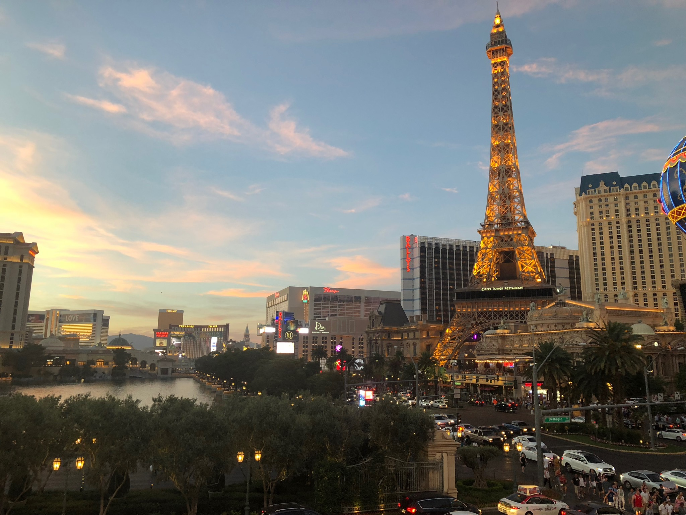
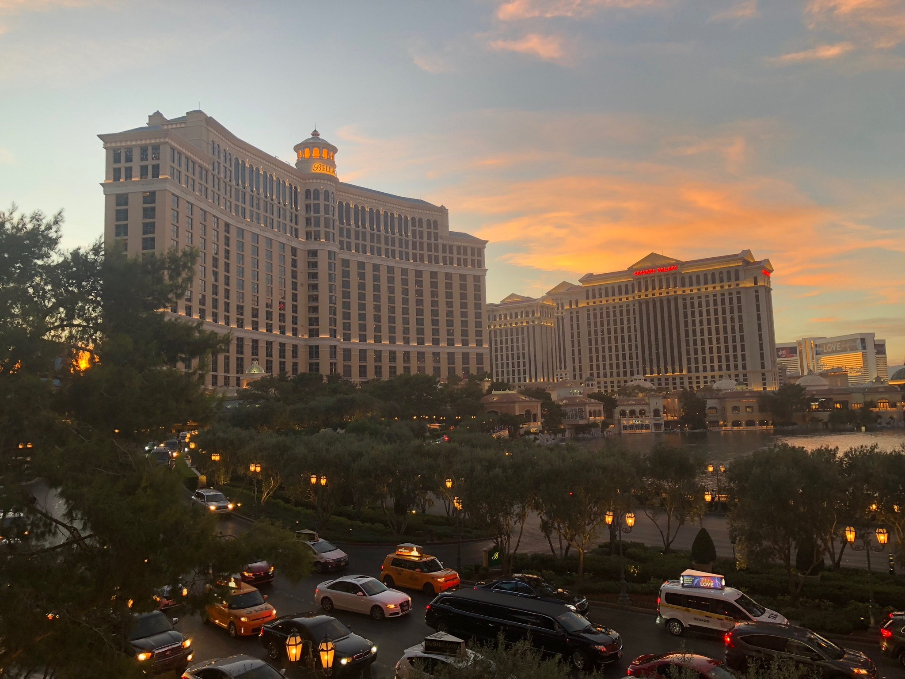
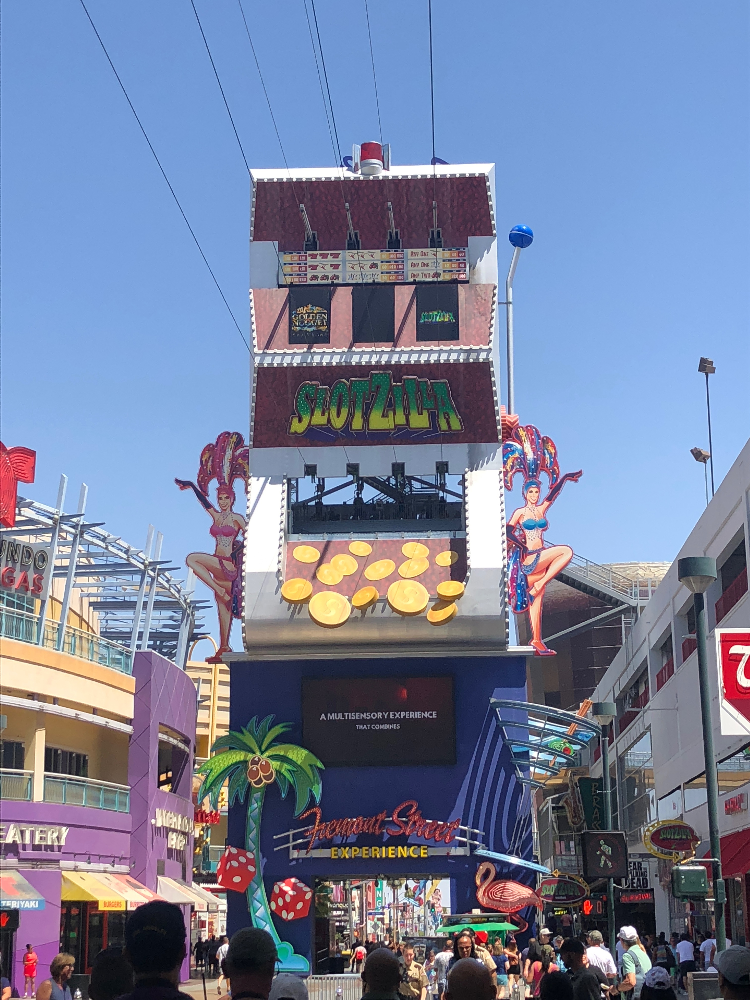
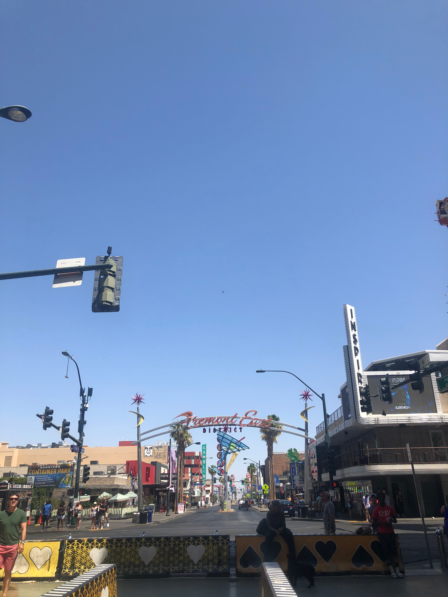

Las Vegas!
Sin City! Chill out at the pool during the day and when the desert sun is far too much enjoy some of the nightlife! Bring your friends and celebrate with all the fabulous attractions, shops, and restaurants! Spend your nights watching amazing shows with some of your favorite artists! If you're feeling adventurous you can drive to Red Rock and take in all the beauty the desert has to offer!
Spend the nights in the lights of Las Vegas! The Bellagio Fountains are a staple of las Vegas and fabulous to experience first hand as the water dances to some of your favorite songs. The hotels are great to spend time at, each one has something different to offer. Take advantage of all they have to offer whether it be the restaurants, shops, or casinos. Don't forget to stop by Vegas staples like Ceasar's Palace, Paris Hotel, and the Flamingo for new and fresh experiences.
 Fremont street is home to the Golden Nugget another classic Vegas hotel! It has so much more to offer, there are plenty of shoops and places to eat while you stroll along with friends. Theres music blasting and fun to be had whether its night or day. There's even a zipline that takes you soaring over the street! Make sure to stop by for a one of a kind experience!
 